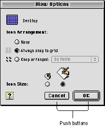

Push Buttons
A push button is a rounded rectangle that is labeled with text. Figure 2-1 shows some typical push buttons using platinum appearance.Figure 2-1 Push buttons in a dialog box

Push buttons usually perform instantaneous actions, such as completing operations defined by a dialog box or acknowledging an error message. Clicking a push button (or pressing a push button's keyboard equivalent) initiates the action described by the button's name.
Always map the keyboard equivalents Command-period and the Esc (Escape) key to the Cancel push button. If you find it useful to assign keyboard equivalents to other push buttons that are used often in your application, be sure to follow the guidelines in "Keyboard Equivalent Support" (page 116) and Macintosh Human Interface Guidelines.
Subtopics
- Push Button States
- Default Buttons